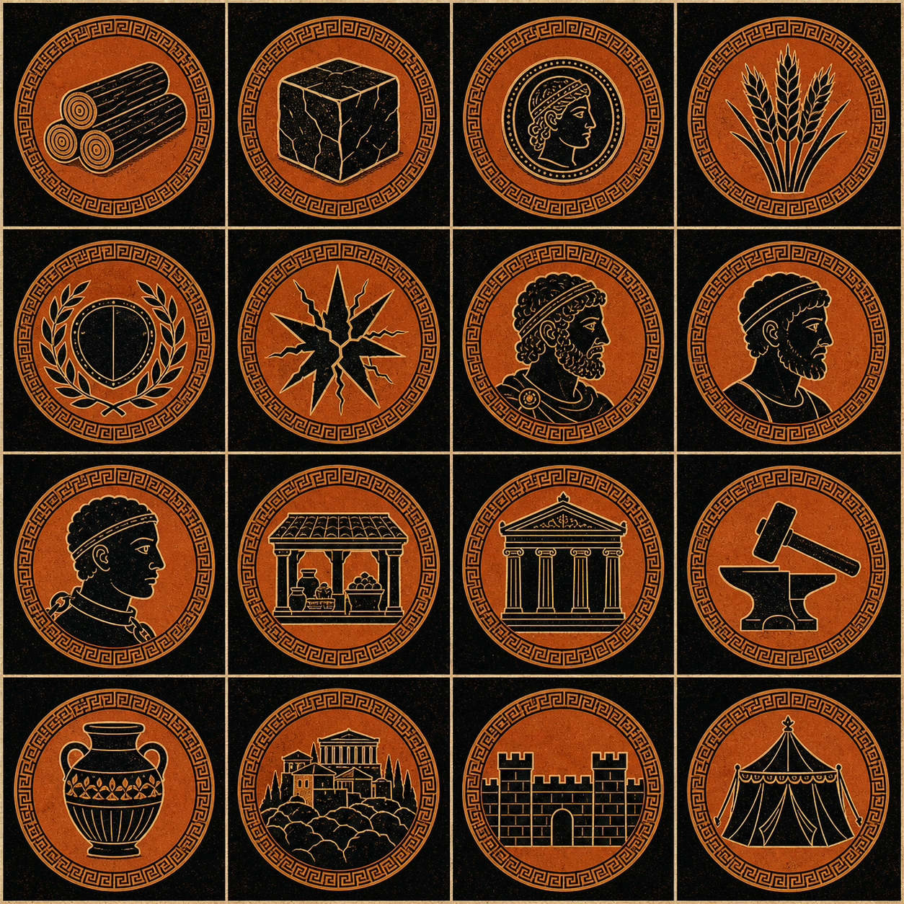
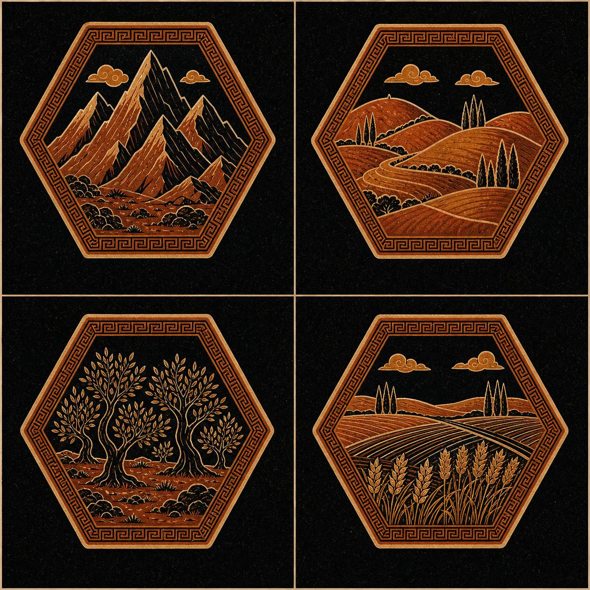
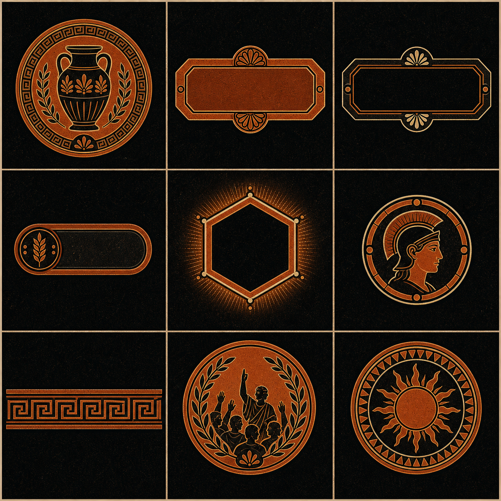
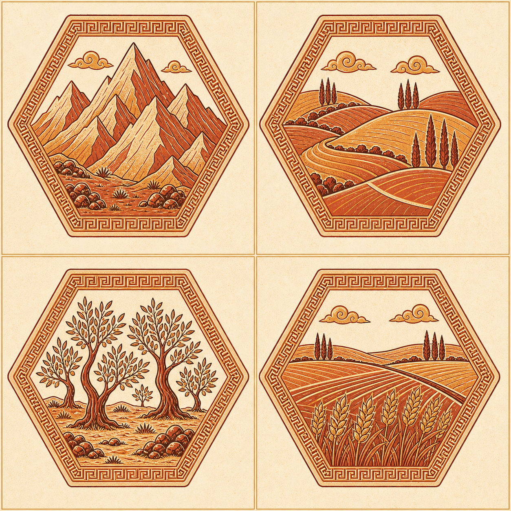
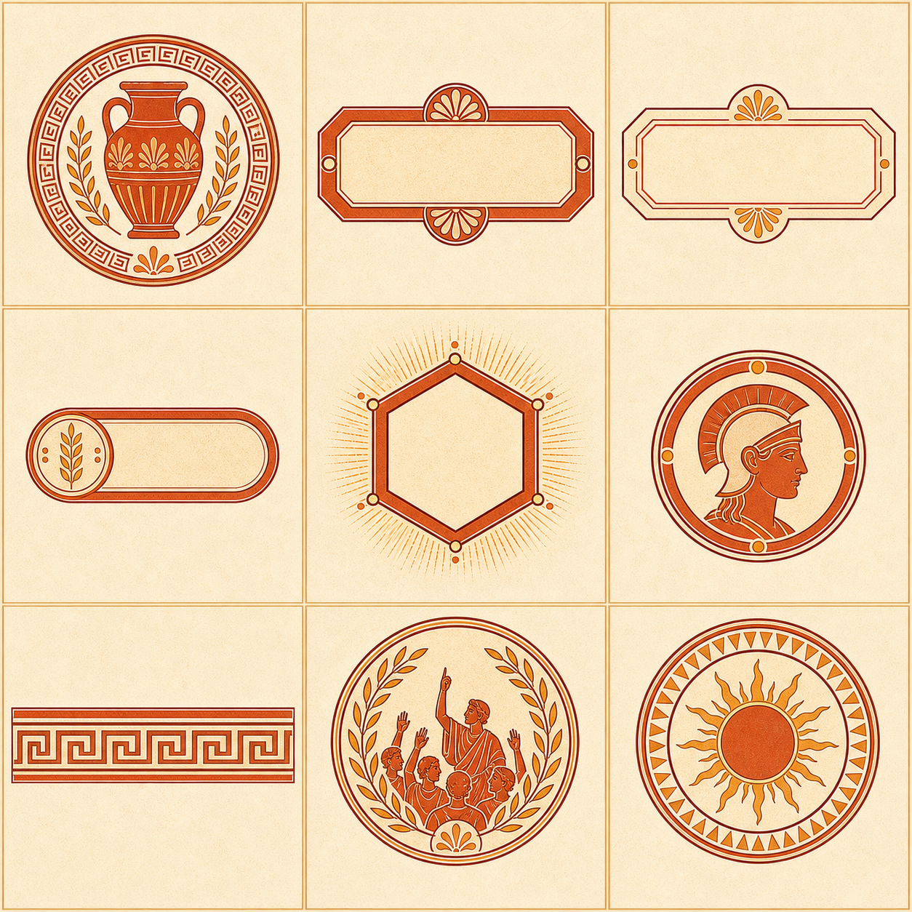

Codex generated brand and asset direction
Two Greek vase systems for the strategy board game: one black-figure dark mode and one red-figure light mode, both rebuilt around generated raster assets instead of the flat placeholder SVG glyphs in the earlier Kerameikos draft.
The showcase is grounded in the v0.1 rules contract: players place capitals and colonies, collect wood, stone, gold, food, influence, and unrest, then spend basic resources on buildings that shift population and income. The deferred political layer still appears as a visual direction for assembly tokens, influence, laurel marks, and season markers.
Alternative I - Dark Mode
A severe black-figure interface: clay silhouettes cut into a black-glazed board, ideal for a tense political strategy game where the resource rail and map read like marks fired onto amphora walls.
The dark direction keeps the useful Kerameikos color memory but raises contrast and gives each UI state a fired-material role: black for the board, clay for action, ochre for politics, bone for incised detail.
Hegemony
Copperplate-like inscriptional capitals give the interface a stamped ceramic rim without relying on remote font loading.
Spectral warmth from the old showcase becomes a broader bookish serif stack. Body copy stays readable for turn logs, build costs, and legal placement feedback while still feeling historical.

Sixteen generated cells replace the old inline SVG glyphs. The names map directly to the current rules data.
The board tiles and UI kit are separate generated sheets so production can tune them independently: terrain remains high contrast, while buttons and markers can be overlaid with live HTML text.


A compact application mock shows how the generated assets behave when they carry actual v0.1 game state: resource counts, tile selection, and the three core turn actions.
Player 1 has placed a capital and can collect income once before building.
Alternative II - Light Mode
A brighter vase system: red-figure ceramics on warm slip, clearer for long teaching sessions and table projection while keeping Hegemony rooted in Greek material language.
The light direction takes the same vase premise but reverses the figure-ground relationship. It keeps terracotta as the main figure color and uses Aegean blue only for navigational and political contrast.
Found A City
The same inscriptional title style is softened by the brighter ground and lower contrast borders.
This mode is the practical teaching-table option: stronger white space, larger hit targets, visible terrain art, and a warmer page rhythm for players learning the economy loop.
Each cell keeps the same sprite position as the dark atlas, making theme switching a file swap rather than a data rewrite.
The generated light sheets lean into tactile component clarity: the tiles are more inspectable, and UI plaques leave cleaner centers for live action text.


The same live concepts as the dark mode, but with larger visual pauses and brighter component surfaces for easier parsing during early hotseat tests.
Player 1 has placed a capital and can collect income once before building.
These eight project-bound PNGs were generated with the native Codex image tool and copied into the workspace. They are intentionally atlas-based: production can crop them into individual UI pieces or replace any cell later without changing the semantic resource, population, building, settlement, terrain, or component mapping.
assets/codex-showcase/dark-hero-tableau.pngassets/codex-showcase/dark-icon-atlas.pngassets/codex-showcase/dark-terrain-atlas.pngassets/codex-showcase/dark-ui-kit.pngassets/codex-showcase/light-hero-tableau.pngassets/codex-showcase/light-icon-atlas.pngassets/codex-showcase/light-terrain-atlas.pngassets/codex-showcase/light-ui-kit.png